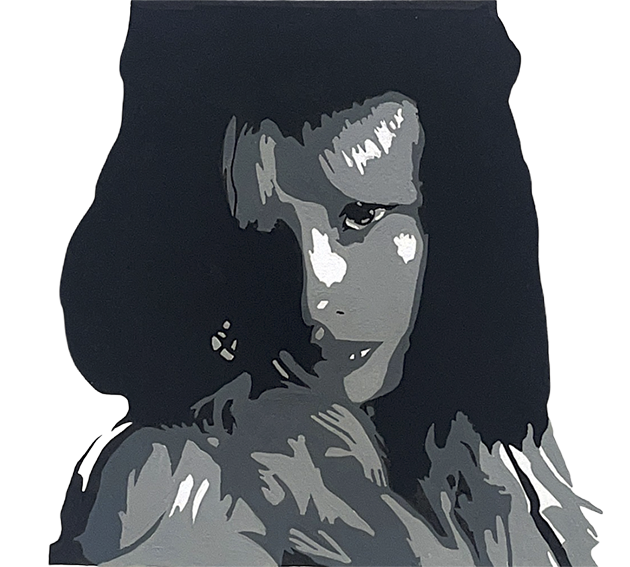

my name is noelle e curry


My name is Noelle Curry, and I am from San Diego. I am a visual communication design major at SF state;
I transferred here in August and am new to the Bay. So far I miss my family and friends dearly,
but I am really enjoying being in the city and getting the opportunity to learn at San Francisco state.
Other things about me are that I love being outside in the sunshine I think it’s awesome and it makes me feel good,
I love to swim especially in the ocean, and I also really love to get to be creative like doing arts and
crafts, painting, even cooking. I also have a big family which I love, I havefive siblings and I am the youngest
but do have two baby nephews now which is so much fun. Also, my mom has a business where she hand dyes yarn
and does knitting projects which is really fun to get to be creative with her.